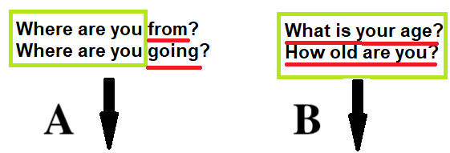
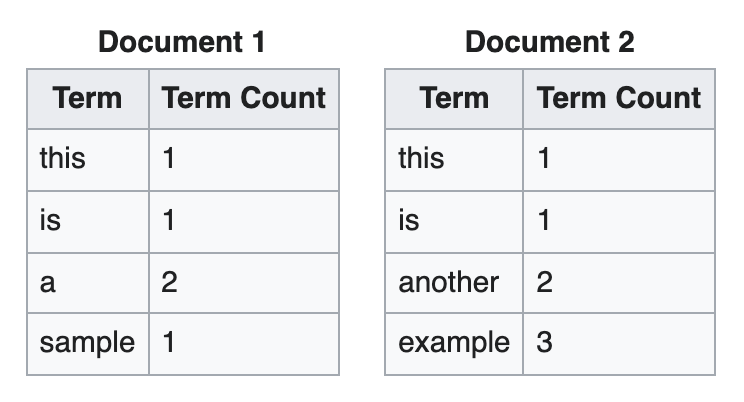

Features¶
Vector Space¶
Which example has 1) Same Words / Different Meaning, 2) Different Word / Same Meaning ?

source: https://towardsdatascience.com/vector-space-models-48b42a15d86d
“You shall know a word by the company it keeps” — J.R.Firth
Count Frequency¶
Count frequency - the frequency of tokens in a text document
it was the best of times it was the worst of times
Q1. Write the dictionary (list of unique words).
Q2. Provide a Count Frequency for each unique token (in a table format):
Token1 |
Token2 |
Token3 |
… |
|---|---|---|---|
count |
count |
count |
count |
Term Frequency¶
Term frequency (TF) is how often a token appears in a text document, divided by how many words there are.
it was the best of times it was the worst of times
Q3.Provide a Term Frequency for each unique token (in a table format):
Token1 |
Token2 |
Token3 |
… |
|---|---|---|---|
tf |
tf |
tf |
tf |
N-Grams¶
N-grams – breaking down text into chunks. A unigram is a one word chunk. A bigram is a two word chunk. A trigram is a three word chunk.
Tim Cook is the CEO of Apple
Q4. Write unigrams, bigrams, and trigrams of the above sentence (in a table format)
Unigrams |
Bigrams |
Trigrams |
|---|---|---|
token1 |
token1 token2 |
token1 token2 token3 |
… |
… |
… |
TF-IDF¶
TF-IDF is composed of 2 algorithms:
Term Frequency - how common the term is
Inverse Document Frequency - how unique / rare the term is
Example: 
source: https://en.wikipedia.org/wiki/Tf–idf
What is tf (this, document1)?
Count = 1
Total terms = 5
What is tf (this, document2)?
Count = 1
Total terms = 7
What is idf (this, D)?
Total Documents = 2
Documents with this = 2
IDF is constant per corpus
What is tf-idf (this,d1,D)?
What is tf-idf (this,d2,D)?
Conclusion: word this is not informative because it occures in all documents
Q1. Find TF-IDF for example